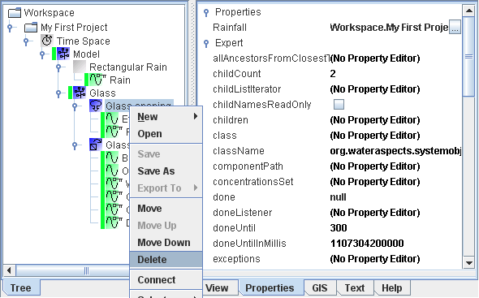
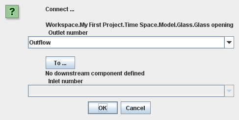
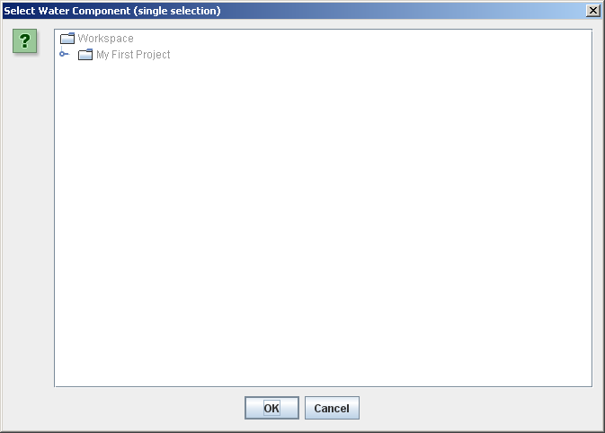
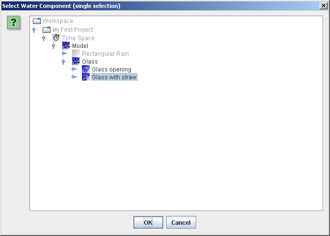
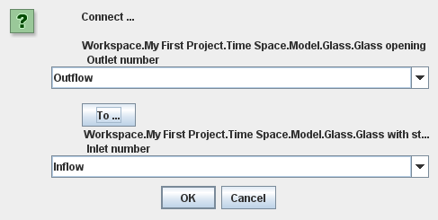
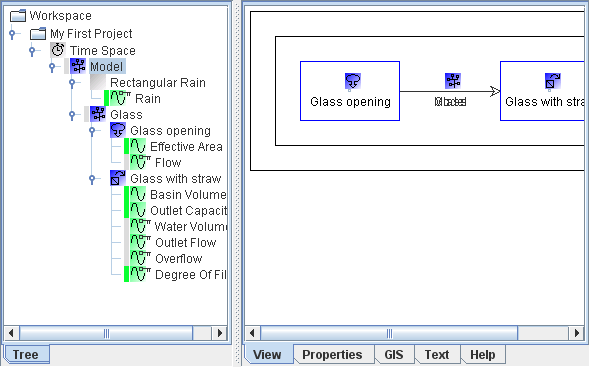

| |
 |  | |  |  | |
We now have the main components that we need but before we really can call our model a model we need to create connections between the water components. Our model essentially has three base components:
To link the "Rectangular Rain" to the "Glass opening":
To connect the "Glass opening" to the "Glass with straw":
Your popup menu should look like this... And here you want to...
This will bring up the connection dialog shown below. First, is the full name of the upstream water component. This is always the component that you had selected when you right-clicked to activate the popup menu. In this case the full name of your "Glass opening" component. Second, below the name of the upstream water component, is the number of the outlet that you wish to connect. Most base water components, like Simple SUrface Area, only have one outlet. However, water components like Splitter and Detention Basin have two outlets. So in this case we just leave the outlet number unchanged as 1. The third item in the connection menu is a 'To ...' which opens a new menu that allows you to select the downstream water component that you wish to connect to. Click the 'To ...' button to get a dialog like this... Expand the tree and select the "Glass with straw" component as shown below. Note that the legal selections (water components) are shown in black whilst the others are in light grey. Click 'OK' to set the selected water component as downstream component. The connection menu should now look like this. Click the connection menu's 'OK' button. If you select the "Model" component and the view tab on the right you should now see that connection arrows have been added to the system diagram (tentative system diagram).  | ||||
| | | | | |